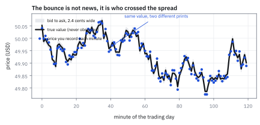
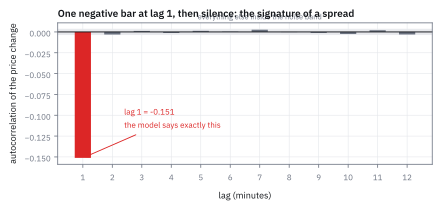
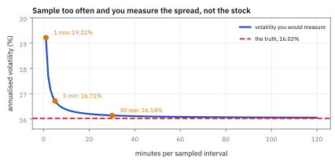
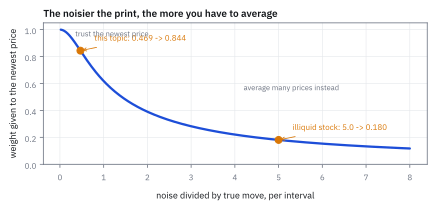

25.3 The Roll Model — Prices Are Observed With Error
ราคาที่บันทึกได้คือราคาจริงบวกความคลาดเคลื่อนที่สุ่มใหม่ทุกครั้ง ความคลาดเคลื่อนนั้นทำให้การขยับสองครั้งติดกันมี covariance ติดลบ ทำให้ความผันผวนที่วัดถี่พองขึ้น และบอกว่าควรเชื่อราคาล่าสุดแค่ไหน
หุ้นราคา \$50 ตัวหนึ่ง นักวิเคราะห์วัดความผันผวนจากราคาทุก 1 นาทีได้ 19.26% ต่อปี อีกคนวัดจากราคาทุก 30 นาทีของช่วงเดียวกันได้ 16.17% คนแรกบอกว่า “ของผมใช้ข้อมูลมากกว่า 30 เท่า จึงแม่นกว่า” ความผันผวนจริงของหุ้นคือเท่าไร และอะไรทำให้ตัวเลขของคนแรกสูงกว่า?
ลองตอบก่อนเปิดเฉลย
ความผันผวนจริงคือ 16.05% ตัวเลข 1 นาทีพองขึ้น 20% เพราะราคาที่บันทึกเด้งไปมาระหว่าง bid กับ ask โดยที่มูลค่าไม่ได้เปลี่ยน การเด้งนี้ไม่สะสมตามเวลา มันจึงเป็นก้อนใหญ่ของการขยับ 1 นาที แต่เป็นก้อนเล็กของการขยับ 30 นาที และมันทิ้งลายนิ้วมือไว้: covariance ของการขยับสองนาทีติดกันคือ −0.000144 \$² ซึ่งบอกกลับได้ว่า spread กว้าง 2.4 เซนต์ และความผันผวนจริงคือ 16.05%
ภาพรวมก่อนลงสูตร
ราคาที่เห็นในข้อมูลไม่ใช่มูลค่าของหุ้น ใน limit order book ราคาที่คนพร้อมซื้อ (bid) ต่ำกว่าราคาที่คนพร้อมขาย (ask) เสมอ ส่วนต่างคือ spread ซึ่งเป็นจำนวนเท่าของ tick (หุ้นสหรัฐฯ ที่ราคาเกิน \$1 มี tick 1 เซนต์) การซื้อขายจะเกิดได้ต้องมีคนข้าม spread: ผู้ซื้อที่รีบจ่ายราคา ask ผู้ขายที่รีบรับราคา bid ราคาที่บันทึกจึงเด้งระหว่างขอบบนกับขอบล่างตามว่าใครเป็นคนข้าม ทั้งที่มูลค่าไม่ได้เปลี่ยน นี่คือ bid-ask bounce
การเด้งไม่ใช่แหล่งเดียว ราคาจากตลาดคนละแห่ง เวลาบันทึกที่คลาดกัน และความผิดพลาดของข้อมูลเองก็ทำให้ราคาที่เห็นต่างจากราคาจริง แบบจำลองของ Roll รวบทั้งหมดเป็นสองบรรทัด: ราคาจริงเดินแบบ random walk ส่วนราคาที่เห็นคือราคาจริงบวกความคลาดเคลื่อนที่สุ่มใหม่ทุกครั้ง ผลที่ตามมาทดสอบได้ทันที: การขยับสองครั้งติดกันมี covariance ติดลบ เพราะราคาที่เด้งขึ้นเกินจริงต้องเด้งกลับ
หน้านี้หาลายนิ้วมือนั้นทุก lag อ่านขนาดความคลาดเคลื่อนและความผันผวนจริงกลับจากข้อมูล ดูว่าทำไมความผันผวนที่วัดถี่พองขึ้น แล้วสร้าง Kalman filter ตัวที่ง่ายที่สุดจากคำถามว่าควรผสมราคาล่าสุดกับค่าประมาณเก่าด้วยน้ำหนักเท่าไร และจบที่กับดักของราคาที่ผ่านการเฉลี่ย รูปด้านล่างคือการเด้งล้วน ๆ ที่ราคาจริงนิ่ง
รูป — ราคาจริงนิ่ง แต่ราคาที่บันทึกเด้งระหว่าง bid กับ ask
ศัพท์ที่ใช้ในหัวข้อนี้
- Efficient price
- ราคาจริงที่มองไม่เห็นโดยตรง $m_t$ ในหน้านี้เดินแบบ random walk เป็นสิ่งที่อยากรู้เวลาคิดผลตอบแทนหรือความผันผวน
- Microstructure noise
- ส่วนต่างระหว่างราคาที่บันทึกกับราคาจริงที่เกิดจากกลไกการซื้อขาย ไม่ใช่จากข่าว เช่น bid-ask bounce ราคาจากตลาดคนละแห่ง หรือเวลาบันทึกที่คลาด ต้องหักออกก่อนวัดความผันผวนจากข้อมูลถี่
- Bid-ask bounce
- ราคาซื้อขายกระโดดระหว่าง bid กับ ask ตามว่าผู้ซื้อหรือผู้ขายเป็นคนข้าม spread ทั้งที่มูลค่าไม่ได้เปลี่ยน เป็นแหล่งหลักของความคลาดเคลื่อนในหุ้นที่ซื้อขายคล่อง
- Autocovariance
- $\gamma_k$ คือ covariance ของค่าวันนี้กับค่าเมื่อ $k$ ช่วงก่อน หารด้วย $\gamma_0$ แล้วได้ ACF หน้านี้ใช้ตัวที่ไม่หารเพราะอ่านเป็นหน่วยเงินได้ตรง ๆ
- Volatility signature plot
- กราฟของความผันผวนที่วัดได้เทียบกับความยาวของช่วงที่เก็บราคา ใช้หาว่าเก็บถี่แค่ไหนความคลาดเคลื่อนจึงยังไม่ครอบงำ
- Kalman filter และ Kalman gain
- สูตรที่ผสมค่าประมาณเก่ากับข้อมูลใหม่ด้วยน้ำหนักที่ทำให้ variance ของความผิดต่ำที่สุด น้ำหนัก $K$ ที่ให้ข้อมูลใหม่เรียกว่า Kalman gain ใช้กรองราคาที่มีเสียงรบกวนให้เหลือราคาจริง
สัญลักษณ์และหน่วย
| สัญลักษณ์ | ความหมาย | หน่วย |
|---|---|---|
| $m_t,\ p_t$ | ราคาจริง และราคาที่บันทึกได้ ณ ช่วงที่ $t$ | ดอลลาร์ต่อหุ้น |
| $\Delta p_t$ | การขยับที่เห็น $p_t-p_{t-1}$ | ดอลลาร์ต่อหุ้น |
| $\sigma_\epsilon,\ \sigma_\eta$ | ขนาดการขยับจริงต่อช่วง และขนาดความคลาดเคลื่อนของราคาที่บันทึก | ดอลลาร์ต่อหุ้น |
| $\epsilon_t,\ \eta_t$ | ก้อนสุ่มค่าเฉลี่ยศูนย์ variance 1 อิสระกันทุกตัว | ไม่มีหน่วย |
| $s$ | ครึ่ง spread spread เต็มคือ $2s$ | ดอลลาร์ต่อหุ้น |
| $\gamma_k,\ \rho_k$ | autocovariance และ ACF ของ $\Delta p_t$ ที่ lag $k$ | ดอลลาร์², ไม่มีหน่วย |
| $q$ | จำนวนนาทีต่อช่วงที่เก็บราคา วันซื้อขายยาว 390 นาที (9:30 ถึง 16:00 น.) | นาที |
| $\kappa,\ P,\ K$ | $\sigma_\eta/\sigma_\epsilon$, variance ของความผิดของค่าประมาณก่อนเห็นราคาใหม่, Kalman gain | ไม่มีหน่วย, ดอลลาร์², ไม่มีหน่วย |
ขั้นที่ 1 — แบบจำลองสองบรรทัด
นี่คือนิยามของแบบจำลอง บรรทัดแรกบอกว่าราคาจริงเดินแบบ random walk ทุกช่วงบวกการขยับใหม่ที่อิสระจากอดีต บรรทัดที่สองบอกว่าราคาที่บันทึกคือราคาจริงบวกความคลาดเคลื่อนที่สุ่มใหม่ทุกครั้ง ตัวเลขของหน้านี้เป็นค่าสมมติของหุ้น \$50 ที่ซื้อขายคล่อง ช่วงละหนึ่งนาที
ความต่างที่สำคัญอยู่ที่การสะสม $\epsilon_t$ ถูกบวกเข้าไปใน $m$ แล้วอยู่ตลอดไป ส่วน $\eta_t$ สุ่มใหม่ทุกครั้งและไม่ตกทอด ความคลาดเคลื่อนของนาทีก่อนไม่มีผลกับนาทีนี้ ในภาษาของ price impact ก้อนแรกคือส่วนถาวร ก้อนที่สองคือส่วนชั่วคราวที่หายไปในการซื้อขายครั้งถัดไป
การเด้งของ bid-ask คือกรณีหนึ่งของบรรทัดที่สอง: $\eta_t$ เป็น +1 หรือ −1 ตามว่าผู้ซื้อหรือผู้ขายเป็นคนข้าม spread และ $\sigma_\eta=s$ คือครึ่ง spread (รุ่นนี้คือ แบบจำลองของ Roll ใน market microstructure) ตัวเลขในหน้านี้จึงตรงกับ spread 2.4 เซนต์ แต่ทุกผลของหน้านี้ใช้ได้กับความคลาดเคลื่อนแบบใดก็ได้ที่ค่าเฉลี่ยศูนย์และอิสระกัน
รูป — ราคาจริงเดินเรียบ ๆ ราคาที่บันทึกเด้งรอบมัน

ขั้นที่ 2 — ลายนิ้วมือ: autocovariance ทุก lag
สิ่งที่เห็นในข้อมูลคือการขยับ $\Delta p_t$ แทนสองบรรทัดของแบบจำลองลงไป แล้วหาค่าเฉลี่ยของผลคูณกับการขยับของ $k$ ช่วงก่อน ผลคูณของก้อนสุ่มคนละตัวหรือคนละเวลามีค่าเฉลี่ยศูนย์เพราะอิสระกัน เหลือเฉพาะก้อนที่ซ้ำกัน
ที่ lag 1 มีก้อนซ้ำก้อนเดียวคือ $\eta_{t-1}$ ซึ่งเป็นราคาปลายของการขยับครั้งก่อนและราคาต้นของครั้งนี้ มันจึงเข้าสองวงเล็บด้วยเครื่องหมายตรงข้าม ราคาที่เด้งขึ้นเกินจริงนาทีนี้ต้องเด้งกลับในนาทีหน้า ที่ lag 2 ขึ้นไปไม่มีก้อนซ้ำเลย
$\rho_1$ ติดลบเสมอและไม่ต่ำกว่า −1/2 ซึ่งเป็นกรณีที่ไม่มีการขยับจริงเลย บรรทัด $\gamma_k=0$ คือส่วนที่ทดสอบได้: ถ้าข้อมูลจริงมี autocovariance ชัด ๆ ที่ lag 3 หรือ 5 แปลว่าราคาจริงมีความจำบางอย่างที่แบบจำลองนี้ไม่ได้ใส่ไว้ รูปด้านล่างนับ covariance ที่ lag 1 ให้เห็นด้วยมือในกรณีเด้งล้วน ๆ
รูป — นับทุกกรณีของการขยับสองครั้งติดกัน เมื่อราคาเด้งล้วน ๆ
ขั้นที่ 3 — อ่านแบบจำลองกลับจากข้อมูล
โจทย์ให้อะไรมาบ้าง: ตัวเลขของหุ้น \$50 ข้างบน และคำถามกลับทาง: ถ้าวัดได้แค่ $\gamma_0$ กับ $\gamma_1$ ของการขยับรายนาที จะรู้ขนาดความคลาดเคลื่อน spread และความผันผวนจริงได้ไหม กลับสองสมการของลายนิ้วมือที่เพิ่งได้
คำตอบ: spread 2.4 เซนต์ หรือ 4.8 bp ของราคา \$50 และความผันผวนจริงต่อนาที $\sqrt{0.00065536}=\$0.0256$ ออกมาจากราคาที่บันทึกล้วน ๆ ไม่ต้องมีข้อมูล quote เลย ตัวแรกคือสูตรอ่าน spread ของ Roll ตัวที่สองคือของใหม่: $\gamma_0+2\gamma_1$ หักความคลาดเคลื่อนออกจาก variance ที่เห็น
โค้ดท้ายหน้าจำลองแบบจำลองนี้ 400,000 นาที (mulberry32 seed 25) ได้ $\hat\gamma_1=-0.00014339$ อ่าน spread ได้ 2.395 เซนต์ และ $\hat\sigma_\epsilon=\$0.02556$ ACF ที่ lag 1 คือ −0.1525 ส่วน lag 2, 3, 5 คือ −0.0004, −0.0022, −0.0017 อยู่ในแถบ $\pm2/\sqrt n=\pm0.0032$ ทั้งหมด
ตรวจเองใน 10 วินาที: $0.012^2=0.000144$ และ $0.0256^2=0.00065536$ ส่วน $0.000144/0.00094\approx0.15$
รูป — ACF ของการขยับ: ติดลบที่ lag 1 แล้วเงียบ

ขั้นที่ 4 — ทำไมความผันผวนที่วัดทุกนาทีพองขึ้น 20%
ถ้าเก็บราคาทุก $q$ นาที การขยับหนึ่งช่วงคือผลรวมของการขยับจริง $q$ ครั้ง บวกความคลาดเคลื่อนแค่สองตัวที่หัวและท้าย ตัวกลางหักกันหมดเหมือนผลรวมแบบ telescoping หนึ่งวันมี $390/q$ ช่วง หนึ่งปีมี 252 วันทำการ
ที่ $q=1$ ก้อนความคลาดเคลื่อน $2\sigma_\eta^2=0.000288$ ใหญ่ถึง 44% ของก้อนจริง 0.00065536 ความผันผวนที่วัดได้จึงพอง $\sqrt{1.4395}-1=20.0\%$ พอ $q=30$ ก้อนจริงโต 30 เท่าแต่ก้อนความคลาดเคลื่อนเท่าเดิม สัดส่วนเหลือ 1.5% และพองแค่ 0.73%
ข้อมูลจำลองในโค้ดให้ 19.23%, 16.73% และ 16.14% ใกล้สูตร ความผันผวนที่วัดได้จึงเป็นสมบัติของหุ้นบวกวิธีวัด การบอกความผันผวนโดยไม่บอกความถี่ที่เก็บราคาคือการบอกไม่ครบ หน้าเรื่อง realized volatility ใช้สูตรนี้เลือกความถี่ที่ดีที่สุด
รูป — volatility signature plot: ยิ่งเก็บถี่ ยิ่งวัดได้สูงเกินจริง

ขั้นที่ 5 — ควรเชื่อราคาล่าสุดแค่ไหน: น้ำหนักที่ดีที่สุด
ถ้าอยากรู้ $m_t$ เรามีสองค่าประมาณ: ค่าประมาณเก่า $\hat m_{t|t-1}$ ที่ใช้ข้อมูลถึงช่วงก่อน ความผิดของมันมี variance $P$ และราคาใหม่ $p_t$ ที่ผิดด้วย variance $\sigma_\eta^2$ ความผิดสองก้อนนี้อิสระกัน ผสมมันด้วยน้ำหนัก $w$ แล้วเลือก $w$ ที่ทำให้ variance ของความผิดต่ำที่สุด
บรรทัดที่สองมาจากความผิดของค่าผสม $we_p+(1-w)e_m$ ที่สองก้อนอิสระกัน variance จึงบวกกันได้ตรง ๆ ตั้ง $v'(w)=0$ แล้วได้ $K$ แหล่งที่แม่นกว่าได้น้ำหนักมากกว่า: ถ้าราคาใหม่เชื่อถือได้ ($\sigma_\eta$ เล็ก) $K$ ใกล้ 1
บรรทัดสุดท้ายบอกว่าหลังผสมแล้วความผิดเหลือแค่สัดส่วน $1-K$ ของเดิม ค่าผสมแม่นกว่าทั้งสองแหล่ง นี่คือขั้นตอน update ของ Kalman filter ในรูปที่เล็กที่สุด ถ้าทุกก้อนเป็น Normal สูตรเดียวกันได้จากค่าเฉลี่ยแบบมีเงื่อนไขของ Normal สองตัวแปร (conditional distribution ของ MVN): ค่าเฉลี่ยเดิมบวก covariance หารด้วย variance คูณความแปลกใจ $p_t-\hat m_{t|t-1}$
รูป — ผสมค่าประมาณเก่ากับราคาใหม่: แหล่งที่แม่นกว่าดึงคำตอบไปหาตัวเอง
ขั้นที่ 6 — น้ำหนักที่นิ่ง: สมการ Riccati ตัวเดียว
หลังผสมแล้ว ราคาจริงเดินต่ออีกหนึ่งช่วง ค่าประมาณที่ดีที่สุดของ $m_{t+1}$ จึงยังเป็น $\hat m_{t|t}$ เพราะการขยับถัดไปมีค่าเฉลี่ยศูนย์ แต่ความผิดโตขึ้น $\sigma_\epsilon^2$ เมื่อทำซ้ำไปเรื่อย ๆ $P$ จะนิ่งที่ค่าที่ “ผสมแล้วเดินต่อ” ได้ค่าเดิมกลับมา สมการที่บอกจุดนิ่งนี้เรียกว่าสมการ Riccati
บรรทัดที่สองได้จากคูณ $P+\sigma_\eta^2$ ทั้งสองข้างแล้วตัด $P\sigma_\eta^2$ ที่อยู่ทั้งสองฝั่ง เป็นสมการกำลังสองที่รากบวกคือบรรทัดที่สาม หลังหารทุกตัวด้วย $\sigma_\epsilon^4$ จะเหลือแค่ $\kappa=\sigma_\eta/\sigma_\epsilon$ ค่า $K$ จึงขึ้นกับอัตราส่วนเสียงรบกวนต่อการขยับจริงเท่านั้น ถ้า $\kappa$ ใหญ่มาก $K$ เข้าใกล้ $1/(1+\kappa)$
ค่าประมาณที่ได้คือ $\hat m_{t+1|t}=(1-K)\hat m_{t|t-1}+Kp_t$ ซึ่งคือค่าเฉลี่ยถ่วงแบบ exponential (EWMA) ของราคา ที่หน้าเรื่อง EWMA, Kalman และ GARCH จะกลับมาใช้กับ variance หุ้นในโจทย์ได้ $K=0.844$ ให้น้ำหนักราคาล่าสุด 84% เพราะความคลาดเคลื่อนเล็กกว่าการขยับจริง
รูป — น้ำหนักที่ให้ราคาล่าสุด ลดลงเมื่อความคลาดเคลื่อนดังขึ้น

ขั้นที่ 7 — กรองราคาของหุ้นที่ซื้อขายไม่คล่อง
โจทย์ให้อะไรมาบ้าง: หุ้นสมมติที่ราคาจริงขยับ $\sigma_\epsilon=\$0.01$ ต่อช่วง 5 นาที แต่ spread กว้าง 10 เซนต์ ความคลาดเคลื่อน $\sigma_\eta=\$0.05$ จึงได้ $\kappa=5$ และสูตร Riccati ให้ $K=0.18100$ ราคาจริงนิ่งที่ \$50.00 ราคาที่บันทึกเด้ง 50.05, 49.95, 50.05, 49.95, 50.05 เริ่มค่าประมาณที่ 50.00
คำตอบ: ราคาที่บันทึกกระโดด ±5 เซนต์ แต่ค่าประมาณอยู่ในกรอบ ±1 เซนต์รอบ \$50.00 ทุกช่วง ถ้าใช้ราคาล่าสุดเป็นราคาปิด ความคลาดเคลื่อนมีขนาด \$0.05 ถ้าใช้ค่าประมาณ ขนาดของความผิดคือ $\sqrt{(1-K)P}=\$0.0213$ โดย $P=0.00055249$ งานจริงจึงมักใช้ค่าเฉลี่ยถ่วงของราคาหลายช่วงสุดท้ายเป็นราคาปิด เช่นค่าเฉลี่ยถ่วงของราคาทุก 5 นาทีช่วงท้ายวัน แทนราคาซื้อขายครั้งสุดท้าย
ตรวจเองใน 10 วินาที: $\hat m_1-50=0.181(0.05)=0.00905$ และ $\hat m_2=50.00905-0.181(0.05905)=49.99836$
รูป — ราคาที่บันทึกกระโดด ±5 เซนต์ ค่าประมาณขยับไม่ถึง 1 เซนต์
ขั้นที่ 8 — ราคาที่ผ่านการเฉลี่ยใช้ข้อมูลซ้อนกัน
คลี่สูตร $\hat m_{t+1|t}=(1-K)\hat m_{t|t-1}+Kp_t$ ด้วยการแทนค่าของช่วงก่อนลงไปซ้ำ ๆ ค่าประมาณคือผลบวกถ่วงของราคาทุกช่วงในอดีต ถ้าเอาค่าประมาณสองตัวที่ห่างกัน $T$ ช่วงมาคิดผลตอบแทน สองตัวนั้นใช้ราคาเก่าชุดเดียวกันอยู่ส่วนหนึ่ง ขนาดของส่วนที่ซ้อนคือน้ำหนักรวมบนราคาที่เก่ากว่า $T$ ช่วง
บรรทัดที่สองคือผลบวกของอนุกรมเรขาคณิต: $K(1-K)^T/(1-(1-K))$ หุ้นคล่องลืมข้อมูลเก่าเร็ว ห่างกัน 5 นาทีก็แทบไม่ซ้อน แต่หุ้นที่ไม่คล่องในตัวอย่างการกรองข้างบน ที่ห่างกัน 5 ช่วงยังซ้อนกันถึง 36.8% ต้องห่างอย่างน้อย 24 ช่วง (สองชั่วโมงของช่วง 5 นาที) จึงซ้อนน้อยกว่า 1% กฎที่ต้องตรวจทุกครั้งคือ $(1-K)^T$ ต้องเล็กมาก
ผลตอบแทนจากค่าประมาณที่ซ้อนกันจะมี autocorrelation เป็นบวกที่ไม่มีอยู่จริง ซึ่งดูเหมือน momentum ที่ทำกำไรได้ใน backtest
รูป — น้ำหนักของราคาแต่ละช่วงในค่าประมาณ เมื่อ K = 0.181
ความผิดที่ให้คำตอบผิดโดยไม่มีอะไรเตือน
เห็น ACF −0.15 แล้วคิดว่าเป็นกลยุทธ์ mean reversion: หลังราคาเด้งขึ้น 2.4 เซนต์ การขยับถัดไปที่คาดไว้คือ $-0.1526\times2.4=-0.37$ เซนต์ แต่การจะเก็บมันต้องขายที่ bid และซื้อคืนที่ ask เสีย spread 2.4 เซนต์ต่อรอบ มากกว่ากำไรที่คาดไว้ 6.6 เท่า ค่าที่วัดได้คือขนาดของ spread ไม่ใช่ขนาดของกำไร
บอกความผันผวนโดยไม่บอกความถี่: หุ้นเดียวกันช่วงเดียวกันให้ 19.26% ที่ 1 นาทีและ 16.17% ที่ 30 นาที ความจริง 16.05% แบบจำลองความเสี่ยงที่ป้อนความผันผวนรายนาทีจะเข้มเกินไป 20%
ใช้ช่วง 1 นาทีกับหุ้นที่ซื้อขายไม่ถึงนาทีละครั้ง: นาทีที่ไม่มีการซื้อขายมีการขยับเป็นศูนย์เพราะราคาค้าง ไม่ใช่เพราะมูลค่านิ่ง ราคาค้างสร้าง autocorrelation เป็นบวก ซึ่งหักล้างลายนิ้วมือที่ lag 1 และทำให้สูตรของ Roll อ่าน spread ต่ำไปหรืออ่านไม่ได้เลย หุ้นที่ซื้อขายน้อยกว่าทุก 5 นาทีโดยเฉลี่ยไม่ควรใช้ช่วง 1 นาที
วัด $\gamma_1$ ได้เป็นบวกแล้วยังใช้สูตร spread: สูตรต้องถอดรากของ $-\gamma_1$ จึงใช้ไม่ได้ และบอกว่ามีอย่างอื่นครอบงำการเด้ง เช่นคำสั่งใหญ่ที่ถูกซอยเป็นคำสั่งย่อยทิศเดียวกัน หรือราคาที่ค้าง ทั้งสองอย่างทำให้การขยับติดกันไปทางเดียวกัน
คิดผลตอบแทนจากราคาที่เฉลี่ยแล้วในช่วงที่ซ้อนกัน: หุ้นที่ $K=0.181$ ต้องห่างกันอย่างน้อย 24 ช่วง ห่างแค่ 5 ช่วงยังซ้อน 36.8% ได้ momentum ปลอม
ใช้ทำอะไรบนโต๊ะจริง
ทีมข้อมูลใช้ $\gamma_0$ กับ $\gamma_1$ ประมาณ spread และความผันผวนจริงของตลาดที่ไม่มีข้อมูล quote ย้อนหลัง ใช้ Kalman gain ที่นิ่งสร้างราคาปิดที่เสถียรจากราคาหลายช่วงท้ายวัน โดยตรวจ $(1-K)^T$ ก่อนเอาไปคิดผลตอบแทน และใช้ volatility signature เลือกความถี่ของข้อมูลระหว่างวันก่อนคิด realized volatility ถ้าข้อมูลจริงมี autocovariance ที่ lag 2 ขึ้นไปชัด ๆ แบบจำลองต้องขยายไปหลาย lag แต่ความคิดยังเหมือนเดิม
โจทย์ตรวจความเข้าใจ
1. การขยับรายนาทีของหุ้นตัวหนึ่งมี $\gamma_0=0.0034$ และ $\gamma_1=-0.0009$ (หน่วยดอลลาร์²) spread ความผันผวนจริงต่อนาที และ $\rho_1$ เป็นเท่าไร?
เฉลย
$\sigma_\eta=\sqrt{0.0009}=0.03$ spread $2(0.03)=\$0.06$ ความผันผวนจริง $\sqrt{0.0034-2(0.0009)}=\sqrt{0.0016}=\$0.04$ ต่อนาที $\rho_1=-0.0009/0.0034=-0.2647$
2. หุ้นที่ $\sigma_\epsilon=\sigma_\eta=\$0.03$ ต่อนาที ความผันผวนที่วัดทุก 1 นาทีพองกี่เท่า และต้องเก็บห่างกันอย่างน้อยกี่นาทีจึงพองไม่เกิน 5%?
เฉลย
ที่ 1 นาที $\sqrt{(0.0009+0.0018)/0.0009}=\sqrt3=1.732$ เท่า ต้องการ $1+2\sigma_\eta^2/(q\sigma_\epsilon^2)\le1.05^2=1.1025$ จึงได้ $2/q\le0.1025$ หรือ $q\ge19.5$ ใช้ 20 นาที ตรวจ: $\sqrt{1+2/20}=1.0488$ พอง 4.9%
3. ถ้า $\kappa=2$ Kalman gain เป็นเท่าไร และค่าประมาณสองตัวต้องห่างกันกี่ช่วงจึงซ้อนกันน้อยกว่า 1%?
เฉลย
$P/\sigma_\epsilon^2=\tfrac12(1+\sqrt{17})=2.5616$ $K=2.5616/(2.5616+4)=0.3904$ $1-K=0.6096$ ต้องการ $0.6096^T\lt0.01$ ได้ $T\gt\ln0.01/\ln0.6096=9.3$ คือ 10 ช่วง
คำนวณซ้ำด้วย JavaScript
รันใน Node.js ได้โดยไม่ติดตั้งแพ็กเกจ โค้ดคิด autocovariance ของแบบจำลอง อ่านแบบจำลองกลับจาก $\gamma_0$ กับ $\gamma_1$ คิด volatility signature หา Kalman gain ทั้งจากสูตรปิดและจากการวนสมการ Riccati จนนิ่ง กรองราคาของหุ้นที่ไม่คล่อง คิดส่วนที่ซ้อน และจำลองราคา 400,000 นาทีเพื่อวัดทุกอย่างจากข้อมูล แล้วพิมพ์ตัวเลขหลักหนึ่งบรรทัด
เปิดดูโค้ด
const {sqrt, log, cos, sin, PI} = Math;
// autocovariances of observed changes when p = m + noise and m is a random walk
function rollMoments(se, sn) {
const g0 = se * se + 2 * sn * sn, g1 = -sn * sn;
return {g0, g1, g2: 0, rho1: g1 / g0, spread: 2 * sn};
}
// read the model back from two measured autocovariances
function fromAutocov(g0, g1) {
if (!(g1 < 0)) throw new RangeError('lag-1 autocovariance must be negative for the Roll reading');
if (!(g0 + 2 * g1 > 0)) throw new RangeError('noise larger than the whole variance');
return {sn: sqrt(-g1), spread: 2 * sqrt(-g1), se: sqrt(g0 + 2 * g1)};
}
// annualised volatility measured from q-minute changes (390 minutes, 252 days)
const signature = (q, se, sn, price, minutes = 390, days = 252) =>
sqrt(q * se * se + 2 * sn * sn) / price * sqrt(minutes / q * days);
// steady-state Kalman gain, closed form and by iterating "blend then walk" (P in units of se^2)
function steadyGain(kappa) {
const P = 0.5 * (1 + sqrt(1 + 4 * kappa * kappa));
return {P, K: P / (P + kappa * kappa)};
}
function riccatiGain(kappa, steps = 200) {
let P = 1;
for (let i = 0; i < steps; i++) P = P * kappa * kappa / (P + kappa * kappa) + 1;
return P / (P + kappa * kappa);
}
// m(t+1|t) = (1 - K) m(t|t-1) + K p(t)
function filterPrices(prints, K, start) {
let m = start;
return prints.map(p => (m = (1 - K) * m + K * p));
}
// total weight on prints older than T intervals
const overlap = (K, T) => (1 - K) ** T;
function mulberry32(seed) {
return () => {
seed |= 0; seed = seed + 0x6D2B79F5 | 0;
let t = Math.imul(seed ^ seed >>> 15, 1 | seed);
t = t + Math.imul(t ^ t >>> 7, 61 | t) ^ t;
return ((t ^ t >>> 14) >>> 0) / 4294967296;
};
}
function normals(rnd) {
let spare = null;
return () => {
if (spare !== null) { const s = spare; spare = null; return s; }
let u = 0;
while (u === 0) u = rnd();
const v = rnd(), R = sqrt(-2 * log(u));
spare = R * sin(2 * PI * v);
return R * cos(2 * PI * v);
};
}
function simulatePrices(n, seed, se, sn, start = 50) {
const z = normals(mulberry32(seed)), p = new Float64Array(n + 1);
let m = start;
p[0] = m + sn * z();
for (let t = 1; t <= n; t++) { m += se * z(); p[t] = m + sn * z(); }
return p;
}
function autocov(d, k) {
let mean = 0, s = 0;
for (let i = 0; i < d.length; i++) mean += d[i];
mean /= d.length;
for (let t = k; t < d.length; t++) s += (d[t] - mean) * (d[t - k] - mean);
return s / d.length;
}
function sampledVol(p, q, price, minutes = 390, days = 252) {
let s = 0, c = 0;
for (let t = q; t < p.length; t += q) { s += (p[t] - p[t - q]) ** 2; c++; }
return sqrt(s / c) / price * sqrt(minutes / q * days);
}
const se = 0.0256, sn = 0.012, kappa = sn / se;
const model = rollMoments(se, sn), gain = steadyGain(kappa), illiquid = steadyGain(5);
const prices = simulatePrices(400000, 25, se, sn);
const changes = prices.slice(1).map((p, i) => p - prices[i]);
const gamma = [0, 1, 2, 3, 5].map(k => autocov(changes, k));
console.log(JSON.stringify({
model: {...model, back: fromAutocov(model.g0, model.g1), spreadBp: model.spread / 50 * 1e4},
signature: {truth: se / 50 * sqrt(390 * 252), q1: signature(1, se, sn, 50), q5: signature(5, se, sn, 50), q30: signature(30, se, sn, 50)},
kalman: {kappa, ...gain, Pdollars: gain.P * se * se, iterated: riccatiGain(kappa), illiquid, illiquidIterated: riccatiGain(5)},
filtered: {estimates: filterPrices([50.05, 49.95, 50.05, 49.95, 50.05], illiquid.K, 50),
prior: illiquid.P * 0.01 ** 2, errorSd: sqrt((1 - illiquid.K) * illiquid.P * 0.01 ** 2)},
overlap: {liquid: overlap(gain.K, 5), illiquid: [5, 20].map(T => overlap(illiquid.K, T)), tFor1pct: log(0.01) / log(1 - illiquid.K)},
sim: {gamma, rho: gamma.map(g => g / gamma[0]), band: 2 / sqrt(changes.length),
read: fromAutocov(gamma[0], gamma[1]), vol: [1, 5, 30].map(q => sampledVol(prices, q, 50))},
trap: {expectedReversal: model.rho1 * 0.024, roundTrip: model.spread},
exercises: {one: fromAutocov(0.0034, -0.0009), twoMinutes: 2 / (1.05 ** 2 - 1),
three: {...steadyGain(2), T: log(0.01) / log(1 - steadyGain(2).K)}}
}));สิ่งที่ควรตอบได้หลังอ่าน
- ราคาที่บันทึกคือราคาจริงบวกความคลาดเคลื่อนที่ไม่สะสม การขยับที่เห็นจึงมี $\gamma_0=\sigma_\epsilon^2+2\sigma_\eta^2$, $\gamma_1=-\sigma_\eta^2$ และ $\gamma_k=0$ เมื่อ $k\ge2$ ในการเด้งล้วน ๆ ขึ้นสองครั้งติดเป็นไปไม่ได้
- กลับสมการได้ $\sigma_\eta^2=-\gamma_1$ และ $\sigma_\epsilon^2=\gamma_0+2\gamma_1$: จาก 0.00094336 และ −0.000144 ได้ spread 2.4 เซนต์และความผันผวนจริง \$0.0256 ต่อนาที
- การขยับ $q$ นาทีมี variance $q\sigma_\epsilon^2+2\sigma_\eta^2$ ความผันผวนที่วัดทุกนาทีจึงพอง 20% (19.26% เทียบ 16.05%) และพองแค่ 0.73% ที่ 30 นาที
- น้ำหนักที่ดีที่สุดของราคาใหม่คือ $K=P/(P+\sigma_\eta^2)$ ซึ่งนิ่งที่ $P=\tfrac12\sigma_\epsilon^2(1+\sqrt{1+4\kappa^2})$: 0.844 ที่ $\kappa=0.469$ และ 0.181 ที่ $\kappa=5$
- ราคาที่กรองแล้วใช้ข้อมูลเก่าซ้อนกันด้วยน้ำหนัก $(1-K)^T$ หุ้นที่ $K=0.181$ ต้องห่างกันอย่างน้อย 24 ช่วงจึงซ้อนน้อยกว่า 1%
หน้าถัดไปใช้ความจริงสองข้อของหน้านี้พร้อมกัน: ข้อมูลถี่ช่วยให้ความผันผวนแม่นขึ้น แต่ความคลาดเคลื่อนดันความผันผวนที่วัดได้ให้สูงขึ้น แล้วหาความถี่ที่ความผิดรวมต่ำที่สุด อ่านต่อที่ realized volatility จากข้อมูลระหว่างวัน